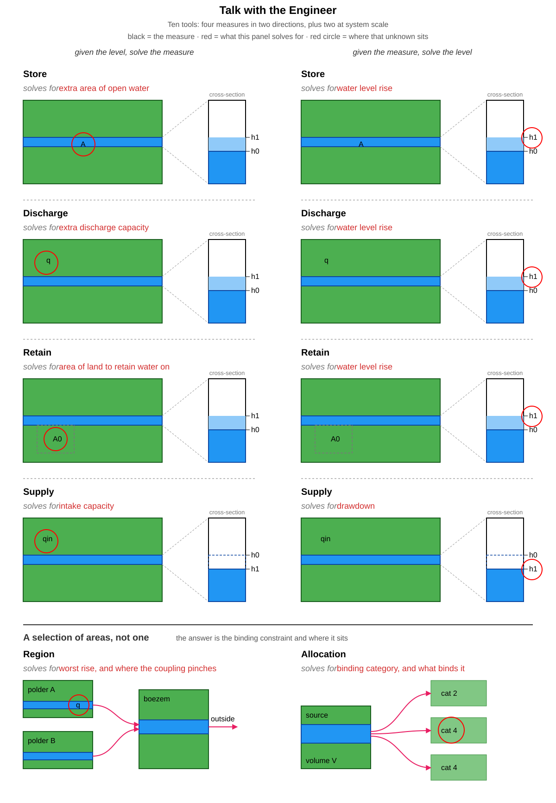

import textwrap
import logging
from talk_with_the_engineer.routers import get_runtime_ctx
ctx = get_runtime_ctx()
logger = logging.getLogger("AI_agent")
logger.setLevel(logging.WARNING)Talk with the Engineer
De vuistregel Agent van ‘Talk with the Engineer’ heeft elf verschillende tools tot zijn beschikking: zes voor één gebied op de natte kant (vasthouden, bergen, afvoeren), twee voor één gebied op de droge kant (aanvoeren), twee op systeemschaal over een selectie gebieden, en één die een COMBINATIE van maatregelen zoekt. Het taalmodel kan deze zelf invullen, maar hier geven we per tool een voorbeeld van de mogelijke in en output.

Retain (vasthouden)
from talk_with_the_engineer.tools import calculate_retention_given_h
from talk_with_the_engineer.models import RetentionInputGivenH, RetentionOutput
retention_input_given_h = RetentionInputGivenH(
# based on water system
area_ha=4000,
time_of_year="summer",
percentage_open_water=3.5,
discharge_capacity_m3_per_sec=5,
# based on measure 'retention' & rain event
return_period=10,
delta_h_available=0.1,
)
retention_output_given_h: RetentionOutput = await calculate_retention_given_h(
ctx=ctx, input=retention_input_given_h
)
print(textwrap.fill(retention_output_given_h.model_dump()["description"], width=50))Om de waterstandstijging bij een bui van eens per
10 jaar op 10 cm te houden, is met de maatregel
'vasthouden' 450 ha land nodig. Zonder maatregel
is de stijging 13 cm, dus dat is een verlaging van
3 cm. Reken op 450 tot 1800 ha afhankelijk van
days_to_discharge, die hier is aangenomen.
Aangenomen omdat ze niet zijn opgegeven:
length_event_hrs=4 dagen (96 uur),
rainfall_regime=R, name_rainfall_pattern=p1c,
days_to_discharge=3, days_to_retain_discharge=2.from talk_with_the_engineer.tools import calculate_retention_given_area
from talk_with_the_engineer.models import RetentionInputGivenArea, RetentionOutput
retention_input_given_area = RetentionInputGivenArea(
# based on water system and rain event
area_ha=4000,
time_of_year="summer",
return_period=10,
percentage_open_water=3.5,
discharge_capacity_m3_per_sec=5,
# based on measure 'retention'
delta_area_ha=500,
)
retention_output_given_area: RetentionOutput = await calculate_retention_given_area(
ctx=ctx, input=retention_input_given_area
)
print(textwrap.fill(retention_output_given_area.model_dump()["description"], width=50))Met 500 ha land brengt de maatregel 'vasthouden'
de waterstandstijging bij een bui van eens per 10
jaar op 10 cm. Zonder maatregel is de stijging 13
cm, dus dat is een verlaging van 4 cm. Reken op 0
tot 500 ha afhankelijk van days_to_discharge, die
hier is aangenomen. Aangenomen omdat ze niet zijn
opgegeven: length_event_hrs=4 dagen (96 uur),
rainfall_regime=R, name_rainfall_pattern=p1c,
days_to_discharge=3, days_to_retain_discharge=2.Store (bergen)
from talk_with_the_engineer.tools import calculate_store_given_h
from talk_with_the_engineer.models import StoreInputGivenH, StoreOutput
store_input_given_h = StoreInputGivenH(
# based on water system and rain event
area_ha=4000,
time_of_year="summer",
return_period=100,
percentage_open_water=3.5,
discharge_capacity_m3_per_min=5,
# based on measure 'store'
delta_h_available=1.0,
)
store_output_given_h: StoreOutput = await calculate_store_given_h(
ctx=ctx, input=store_input_given_h
)
print(textwrap.fill(store_output_given_h.model_dump()["description"], width=50))Om de waterstandstijging bij een bui van eens per
100 jaar op 100 cm te houden, is met de maatregel
'bergen' ongeveer 130 ha extra open water nodig.
Zonder maatregel is de stijging 189 cm, dus dat is
een verlaging van 89 cm. Reken op 64 tot 240 ha
afhankelijk van length_event_hrs, die hier is
aangenomen. Aangenomen omdat ze niet zijn
opgegeven: length_event_hrs=4 dagen (96 uur),
rainfall_regime=R, name_rainfall_pattern=p1c,
days_to_discharge=3.from talk_with_the_engineer.tools import calculate_store_given_area
from talk_with_the_engineer.models import StoreInputGivenArea, StoreOutput
store_input_given_area = StoreInputGivenArea(
# based on water system and rain event
area_ha=4000,
time_of_year="summer",
return_period=100,
percentage_open_water=3.5,
discharge_capacity_m3_per_min=5,
# based on measure 'store'
area_available_ha=2717,
)
store_output_given_area: StoreOutput = await calculate_store_given_area(
ctx=ctx, input=store_input_given_area
)
print(textwrap.fill(store_output_given_area.model_dump()["description"], width=50))Met ongeveer 2700 ha extra open water brengt de
maatregel 'bergen' de waterstandstijging bij een
bui van eens per 100 jaar op 11 cm. Zonder
maatregel is de stijging 189 cm, dus dat is een
verlaging van 178 cm. Reken op 0.09 tot 2700 ha
afhankelijk van length_event_hrs, die hier is
aangenomen. Aangenomen omdat ze niet zijn
opgegeven: length_event_hrs=4 dagen (96 uur),
rainfall_regime=R, name_rainfall_pattern=p1c,
days_to_discharge=3.Discharge (afvoeren)
from talk_with_the_engineer.tools import calculate_discharge_given_h
from talk_with_the_engineer.models import DischargeInputGivenH, DischargeOutput
discharge_input_given_h = DischargeInputGivenH(
# based on water system and rain event
area_ha=4000,
time_of_year="summer",
return_period=10,
percentage_open_water=3.5,
discharge_capacity_m3_per_sec=5,
# based on measure 'discharge'
delta_h_available=0.1,
)
discharge_output_given_h: DischargeOutput = await calculate_discharge_given_h(
ctx=ctx, input=discharge_input_given_h
)
print(textwrap.fill(discharge_output_given_h.model_dump()["description"], width=50))Om de waterstandstijging bij een bui van eens per
10 jaar op 10 cm te houden, is met de maatregel
'afvoeren' 0.28 m3/s extra gemaalcapaciteit nodig.
Zonder maatregel is de stijging 13 cm, dus dat is
een verlaging van 3 cm. Reken op 0.28 tot 3.6 m3/s
afhankelijk van length_event_hrs, die hier is
aangenomen. Aangenomen omdat ze niet zijn
opgegeven: length_event_hrs=4 dagen (96 uur),
rainfall_regime=R, name_rainfall_pattern=p1c,
days_to_discharge=3.from talk_with_the_engineer.tools import calculate_discharge_given_discharge
from talk_with_the_engineer.models import DischargeInputGivenDischarge, DischargeOutput
discharge_input_given_discharge = DischargeInputGivenDischarge(
# based on water system and rain event
area_ha=4000,
time_of_year="winter",
return_period=10,
percentage_open_water=3.5,
discharge_capacity_m3_per_sec=5,
# based on measure 'discharge'
delta_discharge_capacity_m3_per_sec=0.1,
)
discharge_output_given_discharge: DischargeOutput = (
await calculate_discharge_given_discharge(
ctx=ctx, input=discharge_input_given_discharge
)
)
print(
textwrap.fill(
discharge_output_given_discharge.model_dump()["description"], width=50
)
)Met 0.1 m3/s extra gemaalcapaciteit brengt de
maatregel 'afvoeren' de waterstandstijging bij een
bui van eens per 10 jaar op 77 cm. Zonder
maatregel is de stijging 79 cm, dus dat is een
verlaging van 2 cm. Reken op 0.1 tot 0.95 m3/s
afhankelijk van days_to_discharge, die hier is
aangenomen. Aangenomen omdat ze niet zijn
opgegeven: length_event_hrs=4 dagen (96 uur),
rainfall_regime=R, name_rainfall_pattern=p1c,
days_to_discharge=3.Supply (aanvoeren)
Dezelfde rekenkern als afvoeren met de klem gespiegeld: niet de stijging onder een grens houden, maar het peil erboven. De aandrijving is geen bui van uren maar een neerslagtekort van weken.
from talk_with_the_engineer.tools import calculate_supply_given_h
from talk_with_the_engineer.models import SupplyInputGivenH, SupplyOutput
supply_input_given_h = SupplyInputGivenH(
# based on water system. Note there is no pump here: in a deficit there is nothing
# to pump away, so the supply tools refuse `discharge_capacity_*`
area_ha=4000,
percentage_open_water=3.5,
# based on drought event
deficit_mm_per_day=4,
length_days=30,
# based on measure 'supply'
drawdown_available_m=0.25,
)
supply_output_given_h: SupplyOutput = await calculate_supply_given_h(
ctx=ctx, input=supply_input_given_h
)
print(textwrap.fill(supply_output_given_h.model_dump()["description"], width=50))Om een tekort van 4 mm/dag over 30 dagen te dekken
is een inlaat van 0.43 l/s/ha nodig (1.72 m3/s).
Die levert 111 mm; de resterende 9 mm komt uit de
berging onder het streefpeil, die daarvoor 25 cm
uitzakt.from talk_with_the_engineer.tools import calculate_supply_given_supply
from talk_with_the_engineer.models import SupplyInputGivenSupply, SupplyOutput
supply_input_given_supply = SupplyInputGivenSupply(
# based on water system and drought event; again no pump, see above
area_ha=4000,
percentage_open_water=3.5,
deficit_mm_per_day=4,
length_days=30,
drawdown_available_m=0.25,
# leave out for an unlimited source; fill it in and the assumption becomes a number
# available_source_volume_m3=4_000_000,
# based on measure 'supply'
# the intake already in place; leave it out when there is none
# supply_capacity_l_s_ha=0.2,
delta_supply_capacity_l_s_ha=0.4,
)
supply_output_given_supply: SupplyOutput = await calculate_supply_given_supply(
ctx=ctx, input=supply_input_given_supply
)
print(textwrap.fill(supply_output_given_supply.model_dump()["description"], width=50))Een inlaat van 0.40 l/s/ha levert 104 van de 120
mm die een tekort van 4 mm/dag over 30 dagen
vraagt; de berging is na 16 van de 30 dagen op, en
8 mm vraag blijft onvervuld. De waterstand zakt 25
cm uit.De droogte en de bron komen uit dezelfde statistiek. Geef je source_volume_normal_year_m3 en source_river op in plaats van available_source_volume_m3, dan leest de tool bij dezelfde herhaaltijd af hoeveel minder de rivier levert. Vraag en aanbod bewegen dan uit elkaar in plaats van dat alleen de vraag beweegt. Het verband is zwak (correlatie rond -0,3), dus de band eromheen staat in sensitivity en in een caveat.
from talk_with_the_engineer.tools import calculate_supply_given_h
from talk_with_the_engineer.models import SupplyInputGivenH, SupplyOutput
# same polder, same source, only a rarer drought: the demand goes up AND the supply comes down
for return_period in (10, 100):
supply_input_from_statistics = SupplyInputGivenH(
area_ha=4000,
percentage_open_water=3.5,
drawdown_available_m=0.25,
# the drought: this fills in the deficit
drought_region="Rijn_en_IJssel",
drought_scenario="Referentie",
drought_return_period=return_period,
# and the source: what it delivers in a normal year, and which river feeds it
source_volume_normal_year_m3=12_000_000,
source_river="Rijn",
)
answer: SupplyOutput = await calculate_supply_given_h(
ctx=ctx, input=supply_input_from_statistics
)
statistic = answer.data["source_statistic"]
print(
f"T{return_period:<4} vraag {answer.demand_mm:6.0f} mm "
f"aanbod {statistic['availability_fraction']:.0%} van een normaal jaar "
f"= {answer.available_source_volume_m3 / 1e6:.2f} mln m3"
)T10 vraag 269 mm aanbod 91% van een normaal jaar = 10.93 mln m3
T100 vraag 380 mm aanbod 78% van een normaal jaar = 9.35 mln m3Region (systeemvraag)
De enige natte tool die meer dan één gebied aanneemt. Terug komt geen rij per gebied, maar de hoogste stijging, waar die zit, en waar de koppeling knelt. Met head_max_m erin duwt een volle benedenstroomse boezem terug op het gemaal erboven; laat het veld weg en de doorrekening is een enkele pass.
from talk_with_the_engineer.tools import calculate_cascade_given_excess
from talk_with_the_engineer.models import CascadeInput, CascadeNode, CascadeOutput
cascade_input = CascadeInput(
# based on rain event
return_period=100,
time_of_year="summer",
# based on water system: a selection of areas draining onto each other
nodes=[
CascadeNode(
name="polder A",
area_ha=4000,
percentage_open_water=3.5,
discharge_capacity_m3_per_sec=5,
drains_to="boezem",
head_max_m=1.2,
),
CascadeNode(
name="polder B",
area_ha=2500,
percentage_open_water=2.0,
discharge_capacity_m3_per_sec=3,
drains_to="boezem",
head_max_m=1.2,
),
CascadeNode(
name="boezem",
area_ha=8000,
percentage_open_water=6.0,
discharge_capacity_m3_per_sec=10,
),
],
)
cascade_output: CascadeOutput = await calculate_cascade_given_excess(
ctx=ctx, input=cascade_input
)
print(textwrap.fill(cascade_output.model_dump()["description"], width=50))Over 3 gebieden in 2 topologische lagen is de
hoogste stijging 198 cm, in 'polder B'. Dat is 77
cm meer dan hetzelfde gebied los gerekend, dus
zoveel komt er van bovenstrooms bij. De koppeling
knelt bij 'polder A' en 'polder B' - even hard,
dus dit model kiest daar niet tussen: op het uur
van zijn eigen piek was 77 % van het
geinstalleerde gemaalvermogen niet beschikbaar.
Aangenomen omdat ze niet zijn opgegeven:
length_event_hrs=4 dagen (96 uur),
rainfall_regime=R, name_rainfall_pattern=p1c,
days_to_discharge=3.Allocation (verdringingsreeks)
De droge tegenhanger van Region: wie krijgt wat als meerdere gebieden om dezelfde eindige bron concurreren. Terug komt de bindende categorie uit de wettelijke verdringingsreeks (art. 3.14 Bkl), en het onderscheid dat een tool per gebied niet kan maken: of het tekort door de bron komt of door de inlaten. Dat zijn twee verschillende adviezen.
from talk_with_the_engineer.tools import calculate_allocation_given_shortage
from talk_with_the_engineer.models import (
AllocationInput,
AllocationNode,
AllocationOutput,
)
allocation_input = AllocationInput(
# based on drought event and source
length_days=30,
available_source_volume_m3=4_000_000,
# based on water system: the areas competing for the same water
nodes=[
AllocationNode(
name="drinkwaterinname",
percentage_open_water=3.5,
drawdown_available_m=0.30,
area_ha=500,
deficit_mm_per_day=4,
category=2,
intake_capacity_m3_per_sec=1.0,
draws_from="boezem",
),
AllocationNode(
name="landbouwpolder",
percentage_open_water=3.5,
drawdown_available_m=0.30,
area_ha=4000,
deficit_mm_per_day=4,
category=4,
intake_capacity_m3_per_sec=1.5,
draws_from="boezem",
),
AllocationNode(
name="boezem",
percentage_open_water=3.5,
drawdown_available_m=0.30,
area_ha=8000,
deficit_mm_per_day=0,
category=4,
intake_capacity_m3_per_sec=10.0,
),
],
)
allocation_output: AllocationOutput = await calculate_allocation_given_shortage(
ctx=ctx, input=allocation_input
)
print(textwrap.fill(allocation_output.model_dump()["description"], width=50))Over 3 gebieden komt de watervraag niet rond bij
98% van die vraag als aanbod: categorie 4 valt als
eerste af, op 90% van zijn vraag. De inlaten zijn
de klem en niet de bron, dus meer water aanvoeren
helpt hier niet - een grotere inlaat wel. Hoeveel
water er per categorie omgaat hangt niet af van
hoe je binnen die categorie verdeelt; wie het
krijgt wel. Verdeel je het tekort gelijk, dan komt
iedereen in categorie 4 op 90%; leg je het bij de
grootste vragers, dan loopt de dekking van 89% tot
89%. De wet kiest daartussen niet - hij noemt
minimalisatie van de economische maatschappelijke
schade, en die schadefuncties hebben wij niet.Find package (de pakketzoeker)
Alle tools hierboven rekenen één maatregel door. Deze zoekt een pakket: welke combinatie haalt de eisen tegelijk, en wat kost die.
Dat is een andere vraag, want de eisen delen een schaarse grootheid. Peilopzet vergroot de zomervoorraad en verkleint de marge tot inundatie met exact dezelfde centimeters, dus je kunt niet eerst de voorraad regelen en daarna de inundatie — het tweede antwoord maakt het eerste ongeldig. Twee losse tooluitkomsten optellen geeft een pakket dat er plausibel uitziet en de eisen niet haalt.
from talk_with_the_engineer.tools import find_package_given_protection
from talk_with_the_engineer.models import OptimizeInput, OptimizeOutput
package_input = OptimizeInput(
# based on water system
area_ha=4000,
percentage_open_water=3.5,
discharge_capacity_m3_per_sec=5,
# based on rain event
return_period=100,
time_of_year="summer",
# the requirements the package has to meet at the same time
max_dh_total_m=1.0,
min_storage_mm=20,
)
package_output: OptimizeOutput = await find_package_given_protection(
ctx=ctx, input=package_input
)
print(textwrap.fill(package_output.model_dump()["description"], width=50))Om bij een bui van eens per 100 jaar onder de 100
cm te blijven en minstens 20 mm voorraad onder
streefpeil te houden: 'afvoeren' 1.9 m3/s en
'peilopzet' 57 cm, samen 3.6 miljoen euro (3.5 tot
3.8 over het geprijsde deel); 'peilopzet' (57 cm)
kost geen euro's maar drooglegging. Elk even goed
pakket gebruikt 'afvoeren' op precies 1.9 m3/s en
'peilopzet' op precies 57 cm; vasthouden en bergen
dragen wel bij maar passen niet binnen de
prijsband van het goedkoopste pakket; aanvoeren
verbetert geen enkele gestelde eis. Aangenomen
omdat ze niet zijn opgegeven: length_event_hrs=4
dagen (96 uur), rainfall_regime=R,
name_rainfall_pattern=p1c, days_to_discharge=3.Het antwoord is het gebied en niet alleen het punt. best is het goedkoopste pakket, maar de maatvoering daarvan is de minst robuuste uitspraak die uit een optimalisatie komt: de rangorde van maatregelen blijft staan waar de hectares een factor honderd bewegen.
Lees daarom ranges ernaast. forced betekent dat een maatregel in elk even goed pakket zit — daar is geen keuze. Bij absent staat de gemeten reden in absent_reason: verbetert meer van deze maatregel geen enkele gestelde eis, of draagt hij wel bij maar valt hij buiten de prijsband van het goedkoopste pakket? En magnitude_max_source zegt waar de bovengrens van een interval vandaan komt — een zoekgrens is geen koopadvies.
print("status:", package_output.status.value)
print("\nhet goedkoopste pakket:")
for measure in package_output.best.measures:
print(f" {measure.name_nl:12s} {measure.magnitude:8.4g} {measure.unit}")
print(f" kosten: {package_output.best.cost / 1e6:.1f} mln EUR")
print(f" bindende eisen: {', '.join(package_output.best.binding)}")
print("\nde rol per maatregel in het bijna-optimale gebied:")
for reading in package_output.ranges:
detail = (
f"{reading.magnitude_min:8.4g} tot {reading.magnitude_max:8.4g} {reading.unit} "
f"(bovengrens: {reading.magnitude_max_source})"
if reading.role.value != "absent"
else f"reden: {reading.absent_reason}"
)
print(f" {reading.name_nl:12s} {reading.role.value:8s} {detail}")status: exact
het goedkoopste pakket:
afvoeren 1.871 m3/s
peilopzet 0.5714 m peilopzet
kosten: 3.6 mln EUR
bindende eisen: inundatie, voorraad
de rol per maatregel in het bijna-optimale gebied:
vasthouden absent reden: buiten_prijsband
bergen absent reden: buiten_prijsband
afvoeren forced 1.871 tot 1.871 m3/s (bovengrens: prijsband)
peilopzet forced 0.5714 tot 0.5714 m peilopzet (bovengrens: eis)
aanvoeren absent reden: draagt_niet_bijPeilopzet zit in dit pakket en heeft geen prijs. Dat is niet hetzelfde als gratis: hij kost drooglegging, en dat is een verdringingsvraagstuk. Zulke posten staan in priceless, en cost dekt dan alleen de maatregelen die een bedrag hébben — presenteer zo’n pakket dus nooit als het goedkoopste zonder die post te noemen.
for post in package_output.priceless:
print(f"{post.topic} ({post.magnitude}):")
print(
textwrap.fill(
post.what_it_costs, width=50, initial_indent=" ", subsequent_indent=" "
)
)peilopzet (57 cm als maatregel):
Drooglegging: een hoger streefpeil betekent
landbouwschade en functiebeperking, en dat is
een verdringingsvraagstuk en geen
investeringspost. In dit antwoord betaal je hem
bovendien al in de waterstand - de opzet telt
mee in de gerapporteerde stijging, dus elke
centimeter opzet is een centimeter minder marge
tot inundatie.De omslagprijs: een analyse, geen toolaanroep
Peilopzet heeft geen prijs, en een prijs verzinnen is erger dan geen prijs. De derde weg is hem aflezen: varieer de prijs, zoek opnieuw, en meld waar de samenstelling van het goedkoopste pakket omslaat. “Peilopzet moet meer dan X per meter waard zijn voordat het pakket verandert” is een bespreekbare vraag voor een waterschap; “peilopzet heeft geen prijs” is dat niet.
Deze analyse kost veertien volledige zoektochten en zit daarom bewust níet in de tool — een toolaanroep hoort in seconden te antwoorden. Hier, waar rekentijd geen probleem is, is hij een paar regels tegen de rekenkern zelf.
from talk_with_the_engineer.models.modelset_rules_of_thumb.state import PolderState
from talk_with_the_engineer.tools.toolset_rules_of_thumb.optimize import (
Constraints,
switch_price_of,
)
state = PolderState.from_water_system_input(package_input)
switch = switch_price_of(
state,
package_input,
Constraints(max_dh_total_m=1.0, min_storage_mm=20),
"peilopzet",
)
print(
f"tot {switch.price_low / 1e6:.1f} mln EUR per meter opzet: "
f"{' + '.join(switch.package_below)}"
)
print(
f"vanaf {switch.price_high / 1e6:.1f} mln EUR per meter: "
f"{' + '.join(switch.package_above)}"
)tot 5.7 mln EUR per meter opzet: afvoeren + peilopzet
vanaf 5.8 mln EUR per meter: afvoeren + bergen + peilopzet